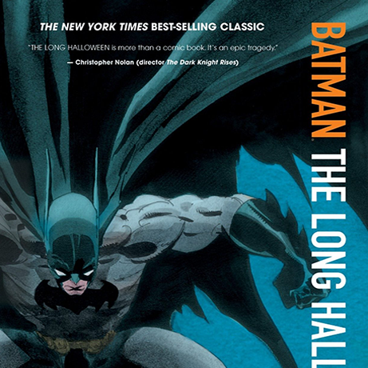
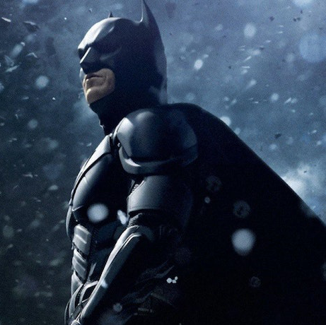
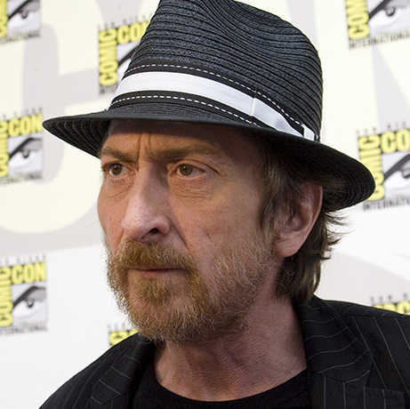
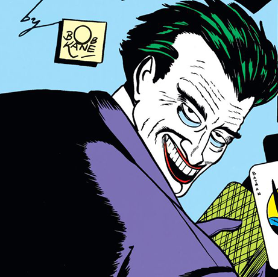
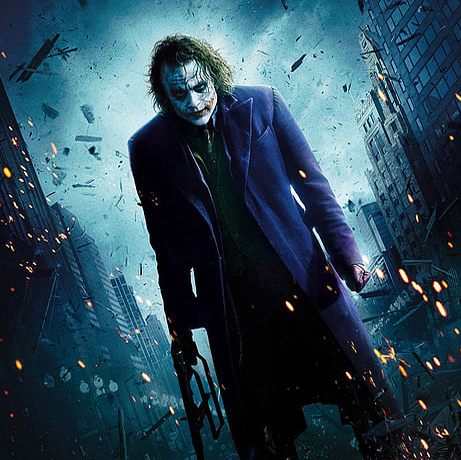

본문컨텐츠영역
Origin
-  
- 
-  
-
he character of Batman made his first appearance in the pages of Detective Comics #27 in May 1939. In the spring of 1940, Batman #1 was published and introduced new characters into Batman's pantheon, most notably those of Catwoman and Batman's eventual nemesis, the Joker.[6] Alfred Pennyworth, the Wayne family butler, was introduced in issue #16 (April–May 1943).[7] Editor Whitney Ellsworth assigned a Batman story to artist Dick Sprang in 1941.[8] Anticipating that Bob Kane would be drafted to serve in World War II, DC inventoried Sprang's work to safeguard against delays.[8] Sprang's first published Batman work was the Batman and Robin figures on the cover of Batman #18 (Aug.-Sept. 1943), reproduced from the art for page 13 of the later-published Detective Comics #84 (Feb. 1944).[9] Sprang's first original published Batman work, and first interior-story work, appeared in Batman #19 (Oct.-Nov. 1943), for which he drew the cover and the first three Batman stories, and penciled the fourth Batman story, inked by Norm Fallon.[10] Like all Batman artists of the time, Sprang went uncredited as a ghost artist for Kane. Villains which debuted during this early era included the Mad Hatter in issue #49 (October 1948)[11] and Killer Moth in issue #63 (February 1951).[12] In 1953, Sheldon Moldoff became another one of the primary Batman ghost artists who, along with Win Mortimer and Dick Sprang, drew stories credited to Bob Kane, following Kane's style and under Kane's supervision.[13] Bill Finger and Moldoff introduced Ace the Bat-Hound in #92 (June 1955).[14]
NOMINATE
The Dark Knight garnered numerous awards and nominations with particular praise for Heath Ledger's performance of the Joker. The film received eight Academy Award nominations at the 81st Academy Awards in 2009, winning two for Best Sound Editing and Best Supporting Actor (posthumously awarded to Ledger).[4] Notably, the film's Best Sound Editing win prevented Best Picture winner Slumdog Millionaire from having a clean category-sweep. At the People's Choice Awards—in which the winners are determined by the choices of the people (audience) in the Gallup polls—The Dark Knight won five awards, including: Favorite Movie, Favorite Action Movie, Favorite Superhero (Christian Bale as Bruce Wayne/Batman), Favorite On Screen Match-Up (Christian Bale and Heath Ledger), and Favourite Cast.[5] The film was included in top-ten films of 2008 lists by multiple publications, including the American Film Institute and the National Board of Review.[6][7] In 2020, the film was selected for preservation in the United States National Film Registry by the Library of Congress for being "culturally, historically, or aesthetically significant".